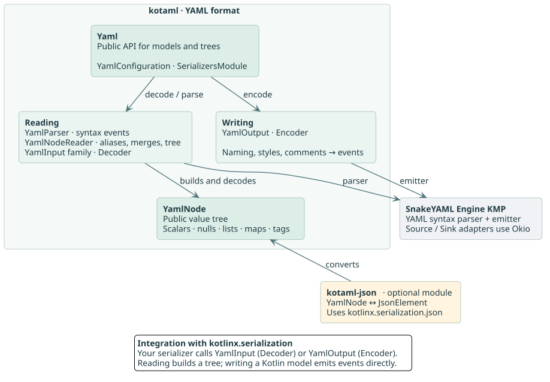
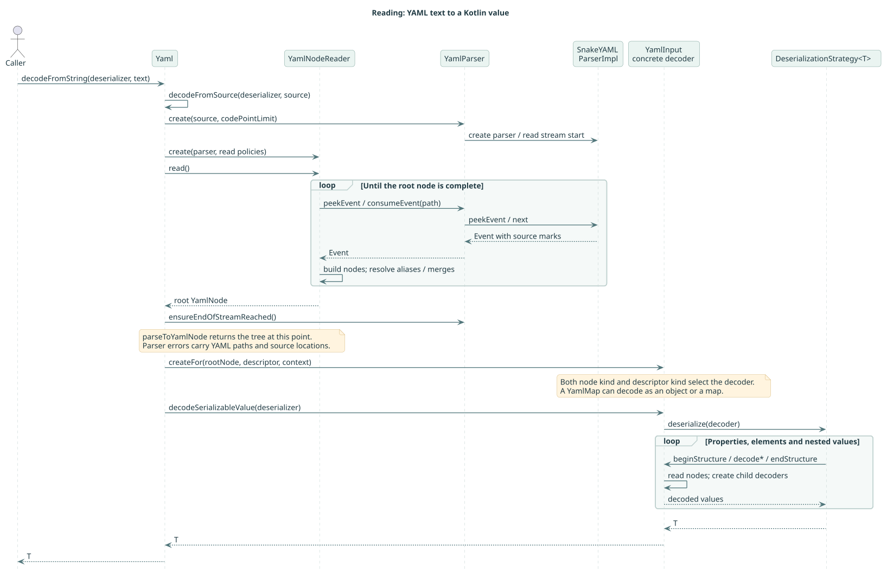
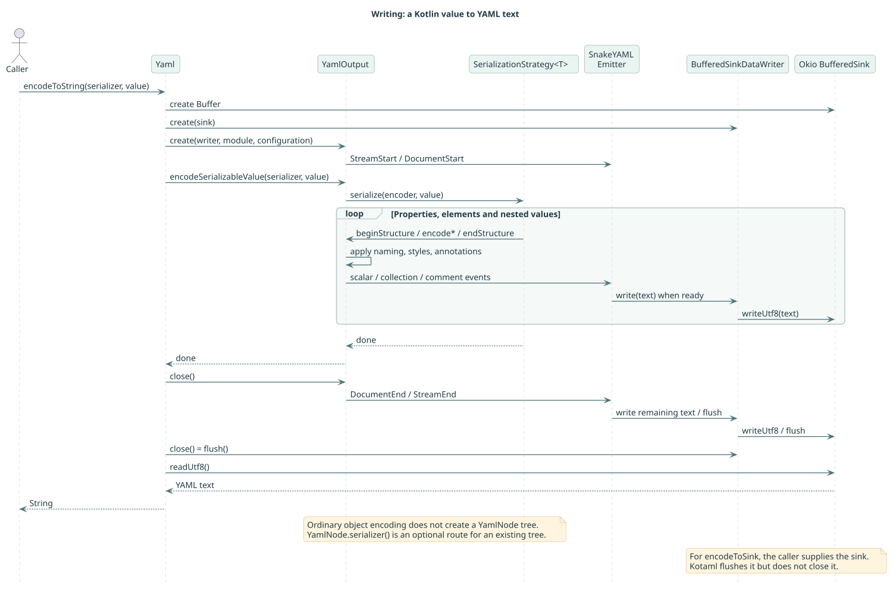
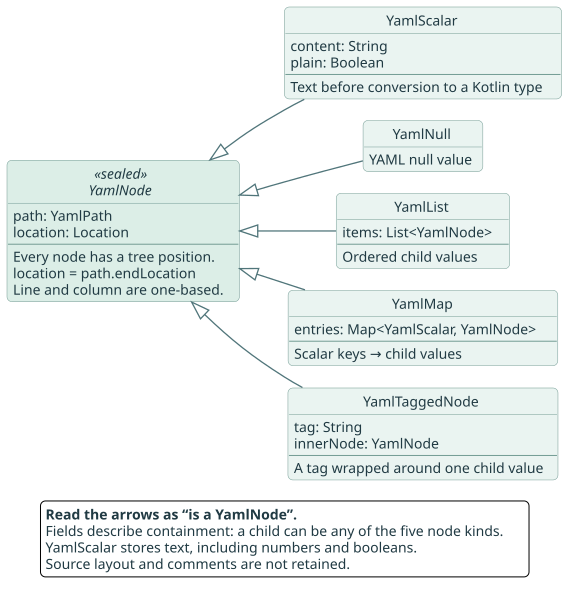

YAML in.
Kotlin out.
Read configuration into Kotlin models, write it back, or explore a document as a tree. Start small. See how it works.
Add kotaml
Choose your build tool. Enable Kotlin serialization to generate serializers for @Serializable models.
Kotlin Toolchain (KTC)
For a Kotlin Toolchain 0.13 JVM app. Maven Central is available by default.
product: jvm/app
dependencies:
- io.heapy.kotaml:kotaml:0.112.0
settings:
kotlin:
version: 2.4.21
serialization: enabledKTC version catalog
Place the catalog at the project root, alongside module.yaml.
[versions]
kotaml = "0.112.0"
[libraries]
kotaml-core = { module = "io.heapy.kotaml:kotaml", version.ref = "kotaml" }product: jvm/app
dependencies:
- $libs.kotaml.core
settings:
kotlin:
version: 2.4.21
serialization: enabledPlace Kotlin sources in src/, then run ./kotlin run. Kotlin Toolchain setup →
Gradle Kotlin DSL
Keep the Kotlin and serialization plugin versions aligned.
plugins {
kotlin("jvm") version "2.4.21"
kotlin("plugin.serialization") version "2.4.21"
}
repositories {
mavenCentral()
}
dependencies {
implementation("io.heapy.kotaml:kotaml:0.112.0")
}Gradle version catalog
Add the version and library alias to your catalog.
[versions]
kotaml = "0.112.0"
[libraries]
kotaml-core = { module = "io.heapy.kotaml:kotaml", version.ref = "kotaml" }plugins {
kotlin("jvm") version "2.4.21"
kotlin("plugin.serialization") version "2.4.21"
}
repositories {
mavenCentral()
}
dependencies {
implementation(libs.kotaml.core)
}Maven
Add the JVM dependencies to <dependencies> in your Kotlin-enabled Maven project.
<dependency>
<groupId>io.heapy.kotaml</groupId>
<artifactId>kotaml-jvm</artifactId>
<version>0.112.0</version>
</dependency>Enable the serialization compiler plugin
Merge these settings into your existing kotlin-maven-plugin under <build><plugins>. Use the same Kotlin version for both plugin artifacts.
<plugin>
<groupId>org.jetbrains.kotlin</groupId>
<artifactId>kotlin-maven-plugin</artifactId>
<version>2.4.21</version>
<extensions>true</extensions>
<configuration>
<compilerPlugins>
<plugin>kotlinx-serialization</plugin>
</compilerPlugins>
</configuration>
<dependencies>
<dependency>
<groupId>org.jetbrains.kotlin</groupId>
<artifactId>kotlin-maven-serialization</artifactId>
<version>2.4.21</version>
</dependency>
</dependencies>
</plugin>The Maven group is io.heapy.kotaml; Kotlin imports retain com.charleskorn.kaml.
These examples create a JVM app. Kotaml also supports web and native platforms; in a multiplatform project, add the dependencies to commonMain.
Supported platforms
Both kotaml and kotaml-json support Kotlin Multiplatform. Parsing, writing and conversion tests live in shared test suites and run across JVM, web and native targets.
| Platform | Targets | Test coverage in CI |
|---|---|---|
| JVM | Java 11 and newer | JVM tests on Linux with JDK 25. |
| JavaScript | Browser and Node.js | Browser and Node.js tests. |
| WebAssembly | Wasm JS in browser and Node.js | Browser and Node.js tests. |
| macOS | ARM64 and x64 | Native ARM64 tests on macOS; x64 execution is skipped on the current runner. |
| iOS | ARM64 devices and ARM64 simulator | ARM64 simulator tests on macOS. |
| tvOS | ARM64 devices; ARM64 and x64 simulators | ARM64 simulator tests on macOS. |
| watchOS | ARM32 and ARM64 devices; ARM64 and x64 simulators | ARM64 simulator tests on macOS. |
| Linux | x64 and ARM64 | Native tests on x64; no ARM64 execution job. |
| Windows | x64 (MinGW) | Native tests on Windows. |
Apple device targets share their implementation and tests with the simulator targets; CI does not run on physical Apple devices. Apple x64 test tasks are skipped on the current ARM64 runner. Target availability and test execution are different: Linux ARM64 is a build target, but its tests are not executed by the current CI matrix. See the target configuration and CI matrix.
Read. Change. Write.
A generated serializer connects your model to YAML. The same Yaml instance can be reused across operations.
import com.charleskorn.kaml.Yaml
import kotlinx.serialization.Serializable
@Serializable
data class Service(
val name: String,
val port: Int,
val tags: List<String> = emptyList(),
)
fun main() {
val input = """
name: api
port: 8080
tags: [internal, kotlin]
""".trimIndent()
val yaml = Yaml.default
val service = yaml.decodeFromString(Service.serializer(), input)
println(service.name) // api
val updated = service.copy(port = 9090)
val output = yaml.encodeToString(Service.serializer(), updated)
println(output)
}name: "api"
port: 9090
tags:
- "internal"
- "kotlin"Output follows writer settings; source formatting is not retained. Open the runnable examples →
No model? Use a tree.
Parse a string into a YamlNode using parseToYamlNode. On JVM, an extension overload also accepts a UTF-8 InputStream (import com.charleskorn.kaml.parseToYamlNode). This example prints Cindy.
import com.charleskorn.kaml.Yaml
import com.charleskorn.kaml.YamlList
import com.charleskorn.kaml.yamlMap
import com.charleskorn.kaml.yamlScalar
fun main() {
val input = """
leader: Amy
members:
- Bob
- Cindy
- Dan
""".trimIndent()
val result = Yaml.default.parseToYamlNode(input)
println(result.yamlMap.get<YamlList>("members")!![1].yamlScalar.content)
}Decode a subtree into a Kotlin model with decodeFromYamlNode. Trees retain values and source locations, but do not preserve comments or the original layout.
Standard collection tags
Reading validates the node kind for standard collection tags: !!seq requires a sequence and !!map requires a mapping. Valid tags are retained in YamlTaggedNode. Mismatches such as !!seq hello or !!map [1, 2] throw MalformedYamlException with the offending node's path and one-based coordinates, both in parseToYamlNode and typed decoding from text or a source. Local !seq and !map are custom tags and are not subject to this check. Legacy scalar compatibility does not disable collection-tag validation.
This validation belongs to the reader. Constructing YamlTaggedNode directly, decoding an existing tree with decodeFromYamlNode, or converting a tree to JSON does not repeat it; callers constructing trees are responsible for their collection tags.
Scalar text and quoting
When a parsed YamlNode is serialized, plain numeric and boolean scalars keep their source text, including 007, 0x7, 1E+003 and True. This preserves numeric precision and distinct mapping keys. String quoting and document formatting follow the writer configuration.
Quoted scalars (plain = false) pass their original content to the string encoder, without numeric conversion. The default, SingleQuoted, DoubleQuoted and PlainExceptAmbiguous styles preserve the string meaning of text such as 0012, 0x10, true and .nan. PlainExceptAmbiguous may remove quotes from ordinary text. Property-level @YamlSingleLineStringStyle overrides the global style.
val node = Yaml.default.parseToYamlNode("\"0012\"")
val safe = Yaml.default.encodeToString(YamlNode.serializer(), node) // "0012" followed by a newline
val plainWriter = Yaml(configuration = YamlConfiguration(singleLineStringStyle = SingleLineStringStyle.Plain))
val plain = plainWriter.encodeToString(YamlNode.serializer(), node) // 0012 followed by a newlineBoth outputs retain all four characters of the content. Parsing safe preserves string semantics; parsing plain produces a plain scalar that resolves as an integer under the Core Schema. Selecting Plain explicitly allows this semantic change: plain = false does not require the writer to preserve source quotes.
Bridge to JSON
OptionalThe optional kotaml-json artifact converts between YAML and kotlinx.serialization JSON trees. Select Include kotaml-json in the installation options. Projects that only use core kotaml do not need a dependency on kotlinx-serialization-json.
import com.charleskorn.kaml.Yaml
import com.charleskorn.kaml.json.toJsonElement
import kotlinx.serialization.ExperimentalSerializationApi
@OptIn(ExperimentalSerializationApi::class)
fun main() {
val input = """
name: api
port: 8080
""".trimIndent()
val node = Yaml.default.parseToYamlNode(input)
val json = node.toJsonElement()
println(json) // {"name":"api","port":8080}
}Conversion rules
val input = """
name: "123"
port: 8080
ratio: 1.10
enabled: true
""".trimIndent()
val json = Yaml.default.parseToYamlNode(input).toJsonElement()
// {"name":"123","port":8080,"ratio":1.10,"enabled":true}
println(Json.encodeToString(JsonElement.serializer(), json))A quoted scalar without an explicit type tag becomes a JSON string, so "123" stays the string "123". A plain scalar is resolved with the YAML 1.2 core schema, so 8080 becomes a number and enabled: true becomes a boolean. Numbers keep their original text wherever JSON allows it, so 1.10 does not become 1.1 and an integer too large for a Long keeps every digit.
Plain null, Null, NULL, ~ and empty content become JSON null, including in manually constructed nodes: YamlScalar("", path) becomes null, while YamlScalar("", path, plain = false) stays an empty string. In YAML text, value: therefore becomes {"value":null}, and value: "" becomes {"value":""}. The converter always uses the Core Schema, including for plain scalars retained by legacy parsing.
Explicit !!int, !!bool and !!float tags determine the type even when the scalar is quoted: !!int "8080" becomes the JSON number 8080, !!bool "false" becomes false, and !!float "1.50" becomes the number 1.50. Values incompatible with their tag, such as !!int "hello" or !!int "1.5", throw YamlException with the value's path. !!str produces a string and !!null produces JSON null; other tags are discarded before converting their contents.
.inf, -.inf and .nan have no JSON representation. By default the conversion throws NonFiniteNumberException; pass NonFiniteNumbers.AS_STRING or NonFiniteNumbers.AS_NULL to convert them anyway.
Both conversions are annotated with @ExperimentalSerializationApi. toJsonElement uses JsonUnquotedLiteral to preserve the exact text of numbers, and toYamlNode carries the same marker so that the pair stays opt-in together.
JSON to YAML
The same artifact converts the other way with toYamlNode().
val json = Json.parseToJsonElement("""{"name":"123","port":8080}""")
val node = json.toYamlNode()
println(node.yamlMap.getScalar("port")!!.content) // 8080This direction always succeeds. A JSON string becomes a quoted scalar, so it stays a string, and a JSON number or boolean becomes a plain scalar carrying its exact original text. Converting a valid JSON tree to YAML and back to JSON returns an equal JSON tree. Starting from YAML can normalize scalar text: for example, 007 becomes 7 after conversion to JSON and back.
Nodes built this way are given the location line 1, column 1, because there is no source document behind them. Their paths identify a position in the tree, not in any text.
YAML features
Supports most major YAML features:
- Scalars, including strings, booleans, integers and floats
- Sequences (lists)
- Maps
- Nulls
- Aliases and anchors, including merging aliases to form one map
Supports parsing YAML to Kotlin objects (deserializing) and writing Kotlin objects as YAML (serializing)
Polymorphism
Supports kotlinx.serialization's polymorphism for sealed and unsealed types
Two styles are available (set YamlConfiguration.polymorphismStyle when creating an instance of Yaml):
using YAML tags to specify the type:
yamlservers: - !<frontend> hostname: a.mycompany.com - !<backend> database: db-1using a
typeproperty to specify the type:yamlservers: - type: frontend hostname: a.mycompany.com - type: backend database: db-1
The fragments above could be generated with:
@Serializable
sealed class Server {
@SerialName("frontend")
@Serializable
data class Frontend(val hostname: String) : Server()
@SerialName("backend")
@Serializable
data class Backend(val database: String) : Server()
}
@Serializable
data class Config(val servers: List<Server>)
val config = Config(listOf(
Server.Frontend("a.mycompany.com"),
Server.Backend("db-1")
))
val result = Yaml.default.encodeToString(Config.serializer(), config)
println(result)Anchors, merges and extension fields
Supports Docker Compose-style extension fields.
x-common-labels: &common-labels
labels:
owned-by: myteam@mycompany.com
cost-centre: myteam
servers:
server-a:
<<: *common-labels
kind: frontend
server-b:
<<: *common-labels
kind: backend
# server-b and server-c are equivalent
server-c:
labels:
owned-by: myteam@mycompany.com
cost-centre: myteam
kind: backendSpecify the extension prefix by setting YamlConfiguration.extensionDefinitionPrefix when creating an instance of Yaml (eg. "x-" for the example above).
Extensions can only be defined at the top level of a document, and only if the top level element is a map or object. Any key starting with the extension prefix must have an anchor defined (&...) and will not be included in the deserialised value.
Parser errors and source I/O
Invalid YAML, unsupported YAML versions and input-limit failures from the parser throw MalformedYamlException. Its cause retains the original engine exception. Marked failures carry the exact one-based line and column; unmarked failures carry the last reader cursor, which may precede the invalid content because of look-ahead. Invalid-character messages also include the available code-point offset and character code.
decodeFromSource propagates a source IOException unchanged, including when the YAML engine wrapped it. Kotaml does not retry reads. If the source failure is retryable, the caller should retry decoding from a fresh source starting at the beginning; a failed parser cannot resume. Cancellation, fatal errors and unrelated source programming errors are not converted to YAML syntax errors.
YAML interprets an initial * as an alias reference and ! as a tag. Quote literal patterns and names such as "*.html", "*.png" and "!.git". Diagnostics suggest quoting when the scanner confirms an alias, or an alias is undefined or disabled. A bare !.git tags an empty/null value: decoding it as non-null String reports the tag and preserves the original null failure as its cause. It still decodes as null for String?; supported tags and polymorphic dispatch keep their meaning.
Nesting depth
Available on main for the next release; not included in 0.112.0.
YamlConfiguration(maxNestingDepth = 50) limits the number of nested mappings and sequences while reading. The root collection counts as one; scalars and null add no depth. Empty collections count, and aliases are checked using their expanded depth before copying nodes. Collections in merge syntax count before merges are applied.
Excess depth throws MalformedYamlException at the first offending collection or alias, with its path and location. The default is 50; zero permits only scalar/null documents, and negative limits are invalid. Raising the limit requires more runtime stack and should be reserved for trusted inputs.
The common regression suite includes depth-10,000 documents. To run it with a 256 KiB JVM thread stack: ./gradlew -I scripts/nesting-depth-small-stack.init.gradle :jvmTest --tests com.charleskorn.kaml.YamlNestingDepthTest.
Migrating from 0.110
LegacyV0_110 is intended only for a quick upgrade to 0.111.0 and will be removed in a future release. Use its diagnostics to migrate existing YAML, then remove the option and return to the default strict reader.
val compatibility = YamlReadCompatibility.LegacyV0_110(
onUse = { issue ->
println("${issue.reason} at ${issue.path.toHumanReadableString()} " +
"(${issue.location.line}:${issue.location.column}): " +
"replace ${issue.originalValue} with ${issue.replacement}")
}
)
val yaml = Yaml(configuration = YamlConfiguration(readCompatibility = compatibility))The mode accepts legacy signed radix integers (-0x11, -0o11), Unicode integer digits, floating point suffixes (1f, 1d), Infinity / -Infinity / NaN, hexadecimal floats (0x1p3), and radix integers as floats (0x2, 0o2, 0b10). These forms are supported on every platform, including forms previously accepted only by JVM or JS. Integer range checks still apply.
Unquoted Null and NULL remain strings in values and keys, including nullable string fields. Their diagnostics occur during parsing; numeric diagnostics occur when decoding a numeric type. Ordinary string values such as Infinity do not trigger numeric diagnostics. The callback is optional, runs synchronously, and may receive events before a later document error. Callback exceptions propagate.
Breaking in 0.111.0: strict reading rejects empty plain mapping keys, just as it rejects null and ~ keys. To use an empty string key, quote it:
? ""
: 1LegacyV0_110 preserves empty plain keys as empty strings and reports LegacyNullKey with "" as the replacement. Empty values still resolve to null in both modes.
Use this configured Yaml instance for both parseToYamlNode and typed decoding; an already resolved YamlNull cannot recover its original spelling. Direct scalar conversions require an explicit argument, for example node.yamlScalar.toInt(compatibility). The parameterless scalar conversions remain strict.
Encoding continues to use the new format. A typical migration reads a typed object with compatibility enabled, writes it back, and verifies that the strict reader can load the result. Parsing an untyped YamlNode does not infer numeric types for legacy numeric strings.
One API. Two different paths.
Reading builds a YamlNode tree before decoding your model. Writing a model sends events directly to SnakeYAML’s emitter. An intermediate tree is not required for ordinary object encoding.
These diagrams describe the implementation on main. They show the successful path; error handling is summarized in the accompanying text.
Component overview
01 / 04

Reading a document
YamlParser wraps SnakeYAML events and normalizes parser failures. YamlNodeReader builds the tree and resolves aliases and merges. A concrete YamlInput then exposes the tree through the serialization decoder API.
Text → tree → Kotlin value
02 / 04

parseToYamlNode stops at the tree. decodeFromYamlNode starts there. Full size · PlantUML sourceThe node kind and SerialDescriptor jointly select the decoder. For example, a YAML mapping can become a Kotlin object through YamlObjectInput or a map through YamlMapInput.
Writing a document
The serializer calls YamlOutput, which applies naming, scalar styles and property annotations. It sends events to the emitter; an adapter writes the resulting text into an Okio sink.
Kotlin value → events → text
03 / 04

Know the core classes
Every YAML value is one of five YamlNode types. Arrows show inheritance; fields show how lists, maps and tags contain child nodes. All nodes carry a path and source location.
The YAML tree
04 / 04

YamlScalar nodes. Full size · PlantUML source| Class / family | Responsibility |
|---|---|
| Yaml | Public entry point; owns configuration and a serializers module. |
| YamlNodeReader | Consumes parser events, builds nodes and resolves aliases/merges. |
| YamlInput | Decoder base and factory; selects scalar, null, list, object, map, contextual or polymorphic decoding. |
| YamlOutput | Encoder that turns serializer calls into emitter events. |
| YamlPath / Location | Identify a position in a tree and one-based source coordinates. |
Contributing
Pull requests and bug reports are always welcome!
kotaml uses Gradle for builds and testing:
- To build the library:
./gradlew assemble - To run the tests and static analysis tools:
./gradlew check - To run the tests and static analysis tools continuously:
./gradlew --continuous check
References
- YAML 1.2 Specification
- snakeyaml-engine-kmp, a Kotlin Multiplatform port of snakeyaml-engine, the YAML parser this library is based on